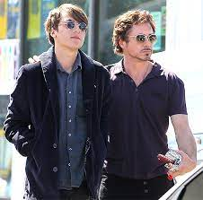
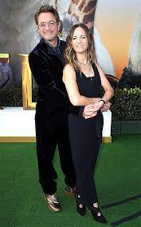

more about ironman
MOST IMP. PERSONS


Robert Downey Jr., an American actor born on April 4, 1965, in New York City, is widely recognized as one of
the most versatile and charismatic actors in Hollywood. He began his career at a young age, appearing in his
father’s films and quickly gaining attention for his talent. Downey's early career was marked by a series of
critically acclaimed roles in films like "Less Than Zero" and "Chaplin," the latter earning him an Academy
Award nomination for Best Actor. Despite his early successes, his career faced significant challenges due
to personal struggles with substance abuse, which led to legal issues and a hiatus from acting.
Downey's career resurgence is one of Hollywood's most remarkable comeback stories. After overcoming his personal
demons and committing to sobriety, he made a triumphant return to the silver screen. His casting as Tony Stark
, also known as Iron Man, in the Marvel Cinematic Universe (MCU) in 2008 was a game-changer, not just for him,
but for the entire superhero genre. Downey's portrayal of the billionaire genius with a troubled past and a
sharp wit became iconic, endearing him to millions of fans worldwide. His role was pivotal in the success of
the MCU, leading to an unprecedented series of interconnected films that dominated the box office for over a decade.
Beyond his work in the MCU, Robert Downey Jr. has showcased his range in various other roles, from the comedic
detective in "Sherlock Holmes" to the dramatic performances in films like "The Judge." His ability to blend
charm, intensity, and vulnerability has made him a favorite among audiences and critics alike. Off-screen,
Downey is known for his philanthropic efforts and his production company, Team Downey, which he runs with his
wife, Susan. His journey from a troubled young actor to a beloved Hollywood icon is a testament to his resilience,
talent, and the power of personal transformation.